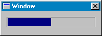

Hilfe
CreateProgBar

Aufruf
Parameter
Rückgabewert
Beschreibung
Beispiel
Siehe auch
progbar = CreateProgBar (x, y, breite, höhe, gruppe [,style])
Parameter
| x | Koordinate x |
| y | Koordinate y |
| breite | Breite von Progbar |
| höhe | Höhe von Progbar |
| gruppe | Identität einer Gruppe |
| style |
0=Objekt frei skalierbar
65536=Objekt fixieren |
Rückgabewert
Identität eines Progbar-Objekts wird zurückgeliefert
Beschreibung
Die Funktion CreateProgBar erstellt ein Progbar-Objekt. Gebe dazu die Startkoordinate x/y und breite/höhe an. Gruppe ist die Identität von Window, Panel, Tabber oder Canvas.
Progbar ist ein einfacher Prozess-Balken. Es wird meistens bei komplexen Berechnungen eingeblendet, um den Fortschritt des Prozesses zu zeigen.

Beispiel
Standardbeispiel:
;Erstellt ein Progbar - Objekt und zeigt einige Sekunden den Fortschritt an:
window = CreateWindow("Window", 0, 0, 200, 100, 0, 1)
x = ClientWidth(window)
progbar = CreateProgBar(10, 10, x - 20, 20, window)
timer = CreateTimer(5)
Repeat
If KeyHit(1) = 1 Then End
If WaitEvent(0) = $4001 Then
If EventSource() = timer And count< = 10 Then
count = count + 1
UpdateProgBar progbar, Float#(count) / 10
EndIf
EndIf
Forever
window = CreateWindow("Window", 0, 0, 200, 100, 0, 1)
x = ClientWidth(window)
progbar = CreateProgBar(10, 10, x - 20, 20, window)
timer = CreateTimer(5)
Repeat
If KeyHit(1) = 1 Then End
If WaitEvent(0) = $4001 Then
If EventSource() = timer And count< = 10 Then
count = count + 1
UpdateProgBar progbar, Float#(count) / 10
EndIf
EndIf
Forever
Siehe auch